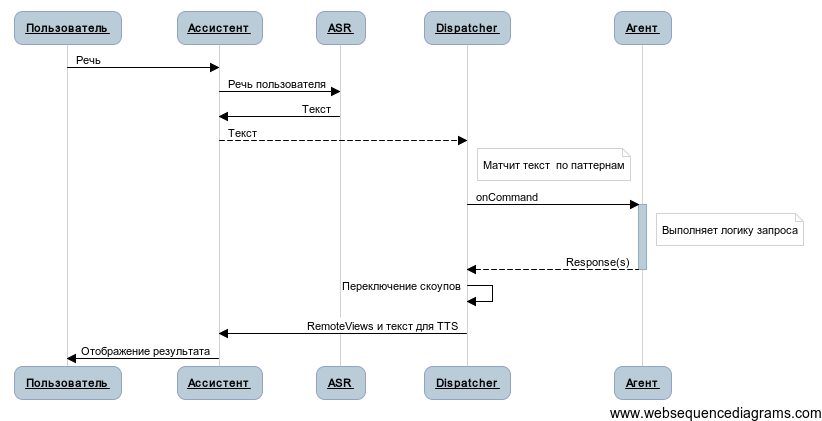

Агент - это точка входа в ваше приложение. С точки зрения реализации - это специальная надстройка над Android-сервисом. За счёт того, что Ассистент на русском использует технику межпроцессного взаимодействия, функциональность вашего приложения становится доступна пользователю ассистента посредством вызова специальных методов агента.
Агент представляет собой немного больше, чем просто сервис. Это специальная обёртка, реализующая методы для взаимодействия с пользователем посредством ассистента. Агенты могут генерировать UI, обрабатывать его события, управлять контекстом разговора, стартовать сторонние активности для получения результата от них и мн. др. необходимые функции.
Агенты приписываются в файле манифеста AndroidManifest.xml вашего приложения в виде сервиса:
<service android:name=".MyAgent">
<intent-filter>
<action android:name="mobi.voiceassistant.intent.action.COMMAND"/>
<data android:scheme="assist" android:host="mobi.voiceassistant.ru"/>
</intent-filter>
<meta-data android:name="mobi.voiceassistant.MODULE"
android:resource="@xml/mod_example"/>
</service>
В качестве фильтра необходимо указать, что сервис должен принимать action mobi.voiceassistant.intent.action.COMMAND. Это означает, что агент реагирует на команды пользователя.
Также необходимо указать, с каким приложением Ассистента на русском работает ваш агент. Для этого в атрибуте android:host тэга data в фильтре нужно указать имя пакета ассистента.
Дело в том, что приложение Ассистент на русском может существовать в виде разных сборок. Например, по языкам. И поэтому иметь разные пакеты.
Если ваш агент может работать с несколькими сборками (например, работать на разных языках), то можно указать несколько пакетов, записав несколько тэгов
dataв фильтре агента.
Мета-данное mobi.voiceassistant.MODULE указывает, какой модуль используется в качестве основного вашим агентом. При инициализации агента Ассистент на русском загрузит все команды этого модуля и свяжет их с агентом.
Совпадает с жизненным циклом основного сервиса Ассистента на русском - Dispatcher.
С пользователем взаимодействует приложение ассистента, которое принимает решение о том, какой агент должен обработать каждый конкретный запрос.
Ассистент диспетчеризует запрос пользователя к агенту, вызывая соответствующие методы обратной связи и передавая в них необходимые данные.
На каждый такой запрос агент должен сформировать ответ(ы) в каком-либо формате (UI, обычный текст, текст для произнесения и т.п.), а также может изменить текущий контекст диалога (активировать необходимые модули или перевести разговор в модальный режим). Подробнее об управлении контекстом читайте в разделе Scopes.
По аналогии с HTTP протоколом агент выступает в качестве сервера для браузера (ассистента). С тем лишь отличием, что на каждый запрос пользователя агент может сформировать сразу несколько ответов, которые будут отображены в виде альтернатив.
С этой аналогией связаны названия сущностей запроса и ответа в API (
RequestиResponseсоответственно). Также существует абстракция Cookies, используемая для хранения промежуточных данных между вызовами агента.
В общем случае взаимодействие агента с ассистентом и пользователем можно изобразить в виде 
Каждый агент должен реализовывать методы абстрактного класса AssistantAgent, который предлагает переопределить по крайней мере один метод - onCommand.
Этот метод - единая точка входа в ваше приложение для ассистента. Ассистент вызывает его каждый раз, когда пользователь взаимодействует с вашим агентом (посредством речи или UI).
Метод выполняется на главном потоке и принимает в качестве аргумента экземпляр класса Request, содержащий все необходимые данные для выполнения команды.
Как правило, реализация этого метода заключается в делегировании вызова одному из методов агента, соответствующему идентификатору команды (
dispatchId).
Запрос пользователя содержит идентификатор команды, информацию о сессии, набор "кукисов" и непосредственно контент.
Контентом может являться токен (в случае голосового взаимодействия с пользователем) или любой другой Parcelable объект (в случае неголосового взаимодействия, например при нажатии на кнопку в UI).
Request также содержит Uri запроса - идентификатор элемента в истории беседы с пользователем, к которому будет привязан ответ(ы) агента на этот запрос.
С помощью метода createResponse можно сгенерировать ответ, который впоследствии нужно наполнить данными. Каждый ответ необходимо добавить в запрос с помощью метода addResponse.
В классе
Requestсуществует множество вспомогательных методов для быстрой генерации ответа в одну строку, изменения предыдущего ответа, его удаления и т.п. операций. Подробнее смотрите документацию по классуRequest.
Пользователь видит ответы от вашего приложения в виде "баблов", всплывающих в ходе беседы на экране. Баблы могут быть оформлены в виде простого текста, либо более сложного UI.
В основе своей реализации они используют RemoteViews, т.к. только такое представление пользовательского интерфейса может быть использовано в стороннем процессе (ассистенте) в ОС Android. Поэтому необходимо учитывать все ограничения, накладываемые на реализацию UI посредством такого подхода.
Кроме данных для отображения ответ может содержать текст для синтеза голосового ответа, набор "кукисов", а также информацию о том, в каком речевом контексте должен быть обработан следующий запрос пользователя (подробности в разделе Scopes). Т.е. ответ также управляет ходом диалога. Подробнее в документации по классу Response.
Здесь мы тоже предлагаем аналогию с веб-программированием, где уровень представления отделён от уровня логики и управления. В случае с ассистентом модули декларативно описывают, как обрабатывать речь пользователя, а императивная часть (агенты) - что делать с этими данными и как управлять диалогом.
Такой подход позволяет не смешивать диалоговые аспекты с бизнес-логикой, давая разработчику относительно простой и понятный способ внедрения речевого интерфейса в собственное приложение.
Как и в веб-технологиях, ассистент может хранить небольшие данные для вашего агента между двумя разными запросами к нему в виде кукисов. Например, в диалогах, где нужно поэтапно выяснять какие-то данные у пользователя, необходимо хранить информацию от предыдущих ответов. Или в случае обработки контекстных вопросов может понадобиться сохранить некоторое кратковременное состояние ("Какая сейчас погода в Москве", а затем идет фраза "На неделю").
Агент может хранить необходимые данные и более длительное время, но для этого нужно пользоваться другими средствами андроида - например, базами данных или
SharedPreferences(подробнее читайте в документации про хранение данных)
Для сохранения кукисов нужно воспользоваться методами [putCookie](http://voiceassistant.mobi/reference/mobi/voiceassistant/base/Response.html#putCookie(int, java.lang.String, double)), которые принимают область видимости хранимого кукиса (mode), имя кукиса и его значение.
Область видимости кукиса обозначает, для каких агентов этот кукис будет доступен в запросе. Таким образом можно организовать взаимодействие между различными агентами. Так, например, в каждом запросе присутствует доступный всем агентам кукис
Location, содержащий последнее известное ассистенту местоположение пользователя.
COOKIE_MODE_AGENT- кукис доступен только данному агенту
COOKIE_MODE_PACKAGE- кукис доступен любому агенту пакета
COOKIE_MODE_GLOBAL- кукис доступен всем, в том числе и агентам из других пакетов